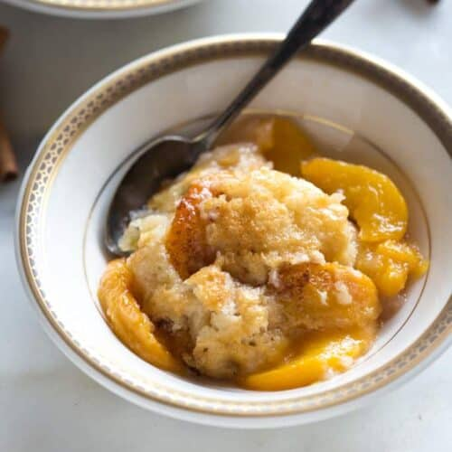

Home
Peach Cobbler

Description
This old fashioned Peach Cobbler recipe is not only extremely easy to make from scratch, but it’s made with fresh or canned peaches so you can enjoy it all year round!
The best part about it is that it literally takes 5 minutes to throw together! I love this recipe, and I'm sure your family will too!
Ingredients
- 5 peaches, peeled, cored, and sliced (about 4 cups)
- 3/4 cup granulated sugar
- 3 tablespoons melted butter or neutral oil
- 1/4 tablespoon salt
For the batter:
- 6 tablespoons butter
- 1 cup all-purpose flour
- 1 cup granulated sugar
- 2 teaspoons baking powder
- 1/4 teaspoon salt
- 3/4 cup milk
- ground cinnamon
Steps
- Add the sliced peaches, sugar, and salt to a saucepan and stir to combine.
(If using canned peaches, skip steps 1 & 2)
- Cook on medium heat for a few minutes, until the sugar is dissolved. Remove from heat and set aside.
- Preheat oven to 350 degrees F. Slice butter into pieces and add to a 9x13 inch baking dish. Place the pan in the oven while it preheats, to allow the butter to melt. Once melted, remove the pan from the oven.
- In a large bowl mix together the flour, sugar, baking powder, and salt. Stir in the milk, just until combined. Pour the mixture into the pan, over the melted butter and smooth it into an even layer.
- Spoon the peaches and juice (or canned peaches, if using) over the batter. Sprinkle cinnamon generously over the top.
- Bake at 350 degrees for about 38-40 minutes. Serve warm, with a scoop of ice cream, if desired.